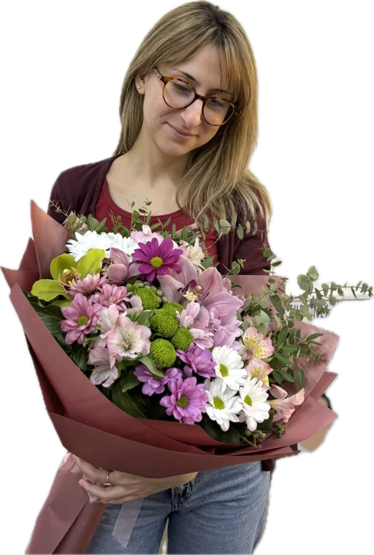
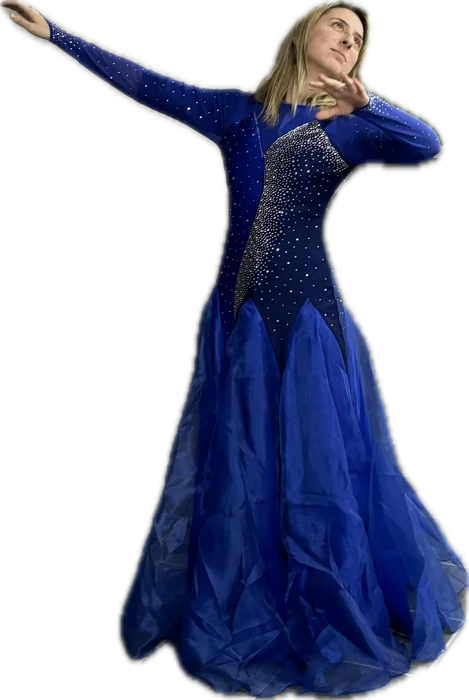
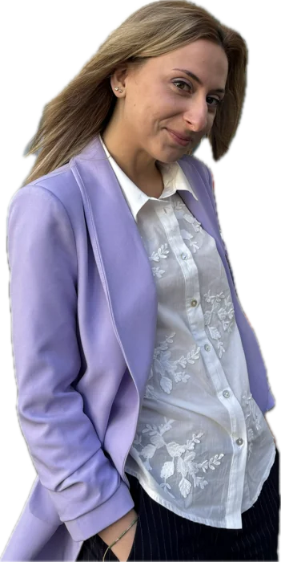
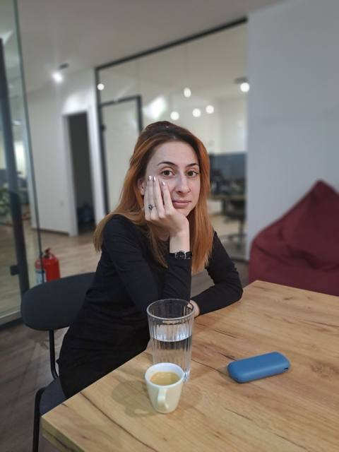
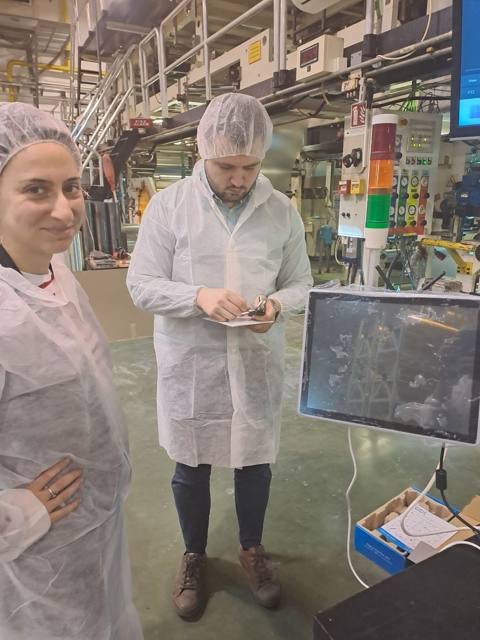
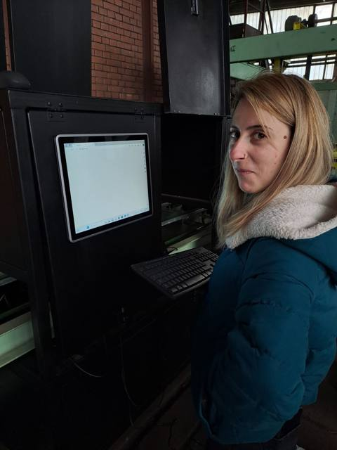
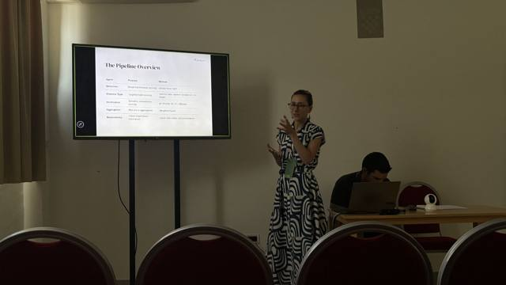
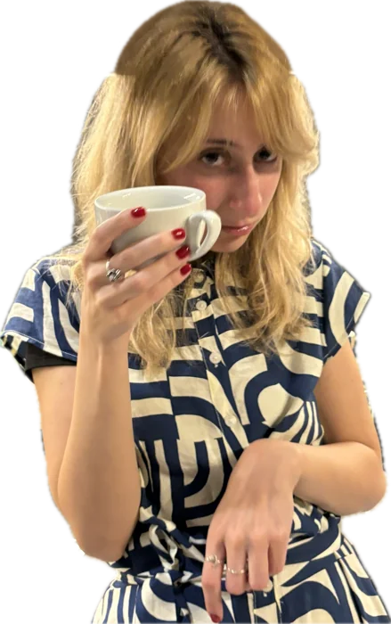

Dođite da se
oprostimo:
danas, cela firma
oprostimo:
danas, cela firma
ISIDORA
Oproštaj
bez cenzure!
Za Isidoru, od najdražih joj kolega_inica 💜
Pokreni inference ↓


Za Isidoru, od najdražih joj kolega_inica 💜
Pokreni inference ↓

EmotionallyChallengingLiquidError.
Inicijalni commit. Stigla je, sela, pitala ko je spustio klimu.

Tekst ulazi, smisao izlazi. A posle — talk u Berlinu, na velikoj sceni.

Prvi susret sa fabrikom. Beli mantil, kapica za kosu, model koji gleda proizvodnju.

Hale, crepovi, stativi, terminali. Dataset snimljen pod tablom „OPASNOST – OTROV”. Bez povreda.

„The Pipeline Overview” — konferencija, publika, ruke koje objašnjavaju pola prezentacije.

Merge u main nije moguć — previše ćemo ti nedostajati. Ali grana ostaje zauvek u našem repou. 💜


Početna hipoteza: kolege_inice poznaju Isidoru. Metod: strukturirani upitnik (naravno). Hajde da proverimo.
Hajde, Isidora, jedna partija stonog fudbala pre odlaska?
Stižu nove poruke! U međuvremenu, najbolji odgovori iz rođendanskog kviza 2026: